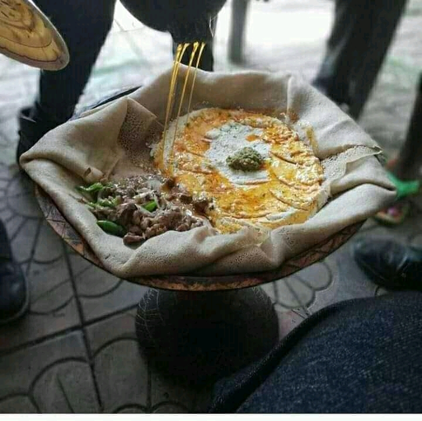

Nekemte is known for its beautiful cultural dresses. The cultural dresses are locally made by weavers. They are endowed with amazing beauty.The traditional clothing tends to be a bit more colorful, with a wonderful play of designs. Mostly the dresses are white and it have a red stripes.
One that everyone can tell is the deliciousness of the cultural dishes found in Nekemte city. The most notable among them; Marqa (Porridge), Cacabsa, Cukoo (Micira), Anchote, Qince (similar to Marqa but made from shredded grains as opposed to flour), roasted meat (foon wadi), milk (anaan), butter (dhadha), cheese (baadu) and other dairy products, Qorso (Akayi) as snacks.
